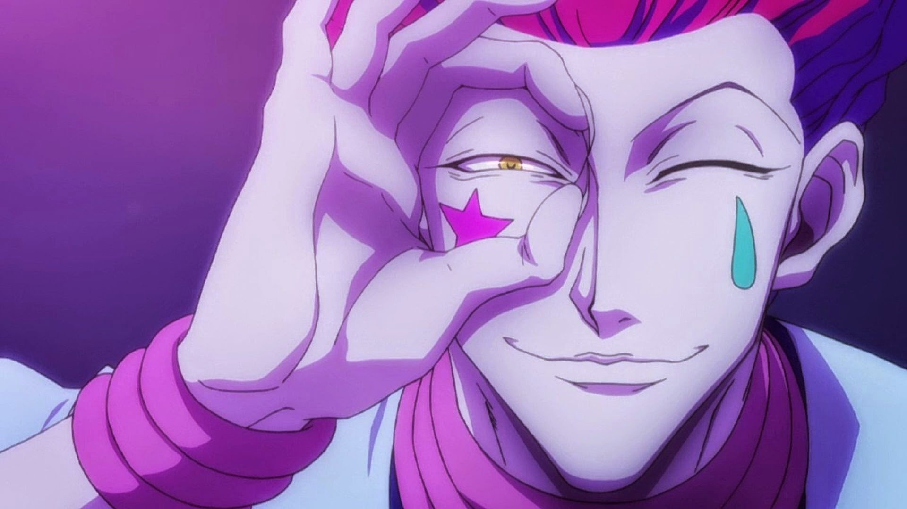

Classe Transmutação (Transmutation) – Nen
A Transmutação é uma das seis categorias principais do Nen em Hunter x Hunter. Os usuários dessa classe alteram a propriedade da sua aura, fazendo com que ela imite outra substância ou elemento, como eletricidade, borracha ou até mesmo gengibre (como o Biscuit brinca).
Características principais
- A aura sofre mudanças em suas propriedades naturais.
- Permite técnicas criativas e de difícil leitura pelo inimigo.
- Requer grande treino de imaginação e controle da aura.
- Usuários costumam ser imprevisíveis e excêntricos.
Exemplo principal: Killua Zoldyck

Killua treina sua aura para se assemelhar à eletricidade. Com isso, desenvolve técnicas como:
- Lightning Palm – Choque direto com as mãos.
- Thunderbolt – Descarga elétrica à distância.
- Godspeed (Modo Deus Relâmpago) – Combinação de velocidade aumentada e reflexos automáticos, movendo-se como um raio.
Killua usa tortura elétrica desde pequeno para acostumar o corpo, o que o tornou capaz de produzir eletricidade com sua própria aura.
Outro exemplo: Hisoka Morow
Hisoka é um transmutador que transforma sua aura em uma substância parecida com borrachaBungee Gum. Essa técnica tem as propriedades de borracha e chiclete ao mesmo tempo, permitindo truques ofensivos e defensivos imprevisíveis.
Vantagens e Desvantagens
- ✔ Vantagens: Grande versatilidade, ataques únicos, difícil de prever.
- ✘ Desvantagens: Demanda mais treino, e algumas transformações podem ter limitações estratégicas.
Transmutação - Killua & Hisoka